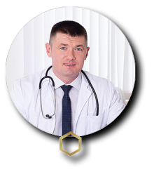
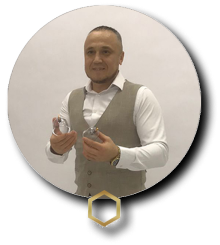
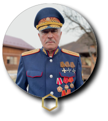
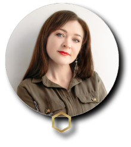
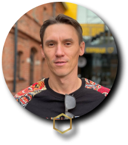

производит и реализует органоминеральные пищевые продукты, удобрения и корма для животных на основе сапропеля из озера с содержанием органики 90%
Общество с ограниченной ответственностью «Живая земля»
ИНН: 0268094281 ОГРН: 1210200040357 Адрес: Республика Башкортостан, г. Стерлитамак-

Кошелев Геннадий Геннадьевич
Ген. Директор ООО «Живая Земля» Учредитель Агентства Развития Туризма «КАРКАДАНН» Учредитель Экоотеля «Торатау» Заместитель Председателя Совета Ассоциации Предпренимателей г. Стерлитамак Вице-президент Профессиональной мед. Ассоциации «АПОДИТ»
-

Максютов Руслан Рамилевич
Президент Профессиональной Медицинской Ассоциации «АПОДИТ» Генеральный директор Клиники традиционной и альтернативной медицины «АПОДИТ КЛИНИКА»
-

Плеханов Вячеслав Григорьевич
Верховный атаман Казачьего природоохранного союза, Генерал-полковник Официальный долларовый миллионер Эстонии во времена СССР
-

Ларина Анна Александровна
Директор Агентства по развитию туризма «Каркаданн» Председатель «Союза Успешных Женщин» Республики Башкортостан Учредитель эко-спа комплекса «ШИШКИ» Практикующий психолог, бизнес тренер, предприниматель, общественник
-

Сайфуллин Олег Анатольевич
Директор по развитию ООО «Живая земля» Основатель Академии «ПРОБИЗНЕС» Опыт в построении Бизнеса 12 лет
Компания «Живая земля» - производит и реализует органоминеральные пищевые продукты, удобрения и корма для животных на основе сапропеля из озера с содержанием органики 90%.
Продуктовая линейка постоянно увеличивается и ассортимент расширяется!
Мы заботимся о вашем состоянии!
Не является лекарственным средством, бадом.
Фульво Гуминовый Комплекс «Чёрный мёд» как источник здоровья
Фульвовые и гуминовые кислоты, которые входят в состав комплекса, содержат 74 органических минерала, 10 витаминов и 18 аминокислот. Они поглощаются растениями из почв, затем кислоты попадают к животным из растительной пищи, и точно также к людям — из растительной или животной пищи.
В наше время химизация сельского хозяйства и животноводства, а также появление технологий консервации и переработки пищевых продуктов, привели к огромному дефициту витаминов, макро и микроэлементов в продуктах питания. Современная еда стала «пищей пустых калорий». Кладезь витаминов, овощи и фрукты, стали похожи на муляжи, большинство продуктов питания, продукты животного происхождения обеднели и не содержат многие полезные элементы, так как выращены по сути искусственным путем. Это приводит к образованию большого дефицита полезных веществ, так необходимых для нашей полноценной жизни.
Широко известный журнал научных и медицинских исследований «HEALTH ALERT» назвал фульвовую кислоту недостающим звеном пищевой цепи для современного человека. ФГК образует идеальный баланс из более ста различных биологически активных минералов и полезных веществ, которых не хватает организму сегодня.